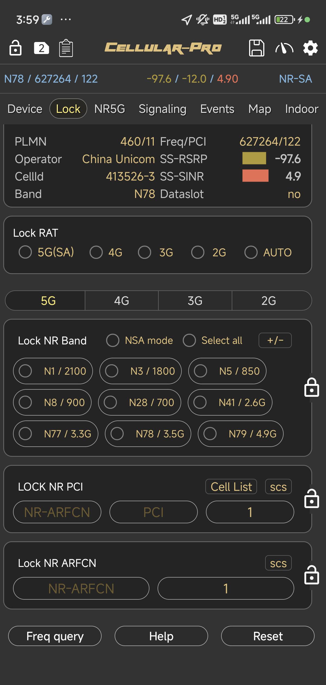
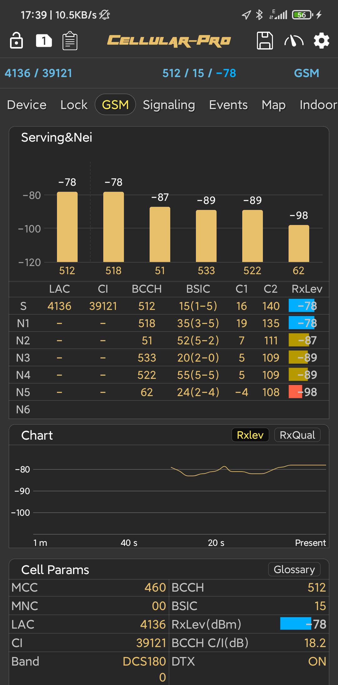

Cellular-Pro is a professional portable road test product. It provides network locking,frequency locking,parameter and signaling decoding,outdoor and indoor track test, work parameter import, base station query,task test,log record,file playback and other functions.
Screen freeze. when the screen has
frozen. Parameters or signaling, events stop refresh.
Sim card. user can switch slot 0 to
slot
1 to view dual Sim information.
Task list. app supply FTP, HTTP,
Video,
PING, MO ,MT task for testing.
Log save. currently
app supply DLF,
CU,CSV,LTE file formats for choice.
App settings. Including system
configuration, crash report, cell database management.
1 Lock RAT and lock ARFCN

Lock RAT provides
2G / 3G / 4G / 5G networks for selection, which is convenient for testers to test under,different
networks. Frequency locking includes band, frequency lock point and PCI lock.The frequency band is the
largest set in
LTE, with a total of 64. The commonly used frequency bands are 1 (FDD), 3 (FDD), 5 (FDD), 7 (FDD), 8
(FDD), 20 (FDD), 29 (FDD), 34 (TDD), 35 (FDD), 37 (TDD), 38 (TDD), 39 (TDD), 40 (TDD), 41 (TDD).There are
several central frequency
points in each frequency band, and the actual frequency points in each cell are composed of PCI.Lock
function is an essential means for
base station verification. App also provides dual card frequency locking operation.
When you complete to select band or
input ARFCN value, please click to execute instruction.
1.1 Lock Rat

-
5G means NR only
-
4G means LTE only
-
3G means WCDMA only
-
2G means GSM only
-
Auto means NR/LTE/WCDMA/GSM/CDMA. Phone will select network automatically.
The function will has effect while clicking the button. Please wait for a while after
operation.
1.2 Lock ARFCN
-
WCDMA & GSM lock
Use WCDMA and GSM lock ,you must lock wcdma network firstly .
When the network is in 3G ,the lock view will change like this

When the network is in GSM, the lock view will change like this

-
LTE lock bands

User can select one or
more bands depending on you need to lock.
But remember to click
the icon
to complete lock
operation.
-
LTE lock EARFCN,input lte earfcn then click lock icon
-
LTE lock PCI,input lte earfcn and pci then click lock icon
2 Parameters view
The parameters view includes NR5G, LTE, WCDMA and GSM. Parameters directly reflect the
interaction between mobile phone, base station and core network, which is of great significance. Common
parameters
include cell configuration,physical layer measurement, signal strength comparison between service cell and
neighbor cell, voice (including volte),data throughput, resource allocation, etc. In the case of multi
carrier, various
configuration and signal of auxiliary carrier are needed
2.1 NR5G view
2.2 LTE view
Indicate currently display slot 1
information
Indicate currently the device has
rooted
and app get authority correctly.
Otherwise it
means that the device may not be Qualcomm
chipset or no
rooted.
2.3 WCDMA view

2.4 GSM view

3 Signaling view
Signaling is the core content of the interaction between mobile phone and base
station. All kinds of measurement information reporting and measurement control are reflected
through signaling. In terms of direction,signaling is divided into two directions: uplink (from mobile
phone to base station)
and downlink (from base station to mobile phone).Signaling is layered. Taking LTE as an example, it can be
divided into RRC,ESM,EMM
and SIP.RRC signaling is reclassified by logical channel. At present, APP only supports layer
3 messages.
User can click one item to see the detailed decoder information.
signaling filter. And you can select
special signaling group to display
4 Map
Outdoor map is rendered by GPS and parameters, including RSRP, SINR, RSRQ for
LTE,RXLEV for GSM, RSCP for WCDMA. SS-RSRP,SS-RSRQ,SS-SINR for NR5G,Speed, etc.
Can be very intuitive to see the current coverage and situation.
4.1 Exportation function
when you switch the Map fragment,
you can export the currently parameters in CSV format by clicking the icon  .
.
CSV file
will record 5 minutes data for non-senior member. But no limitation for senior member.

SAT. means Satellite map/Normal map switch
NOR. means Following mode/Normal mode switch
Clear means Clear all the track points

5 Indoor map
The indoor map is mainly used for indoor signal coverage analysis. Since there is no
GPS precise point indoors, it is only done by manual marking
5.1 Revert
Revert function can remove previous points track. It’s very useful for update mistake
points
5.2 Finish
And you sure the make points need complete , please select Finish button. App will save
the tracks bitmap and CSV file.
6 Cell base station management
At present, it
supports the import, deletion and query management of LTE / WCDMA / GSM.
And NR5G will
support soon. Cell database need CSV file format.
6.1 Import
import cell database from CSV
files
If user load LTE CSV file, the database can contain these keywords..

User need select
keywords in the left. Then select corresponding content in the center area.
Such as
“LONGITUDE” <-> “Lon”. When
the all keywords
match complete. Click
“Start loading”.
When you see the
LTE ROWS bigger than 0 import work is success.
And user can see
the cell base station information in LTE page and Map page if import LTE cell database
successfully.

6.2 Position cell location
App will list all eNodeB ID in currently area for user selection
6.3 Query cell information
 query cell information by eNodeB ID
(or
ECI)
query cell information by eNodeB ID
(or
ECI)
Input "eNodeB id" and "Cellid" ,then click Query button
"
6.4 Delete cell database
delete cell database
7 Task Test
At present, FTP upload, download, Ping, video, Web page, Outgoing call, Incoming call,
Video, HTTP download, upload, services are provided. During the test process, there will be standard
events required
by road test,and there will also be statistical analysis of KPI indicators.
7.1 Create task
Currently App supply FTP , PING, HTTP, MO,MT HTTP Page, Video, Covers items to Test.
7.2 Select scene
Currently there are 2 scenes for selection. Indoor Mode and Outdoor Mode.
If you select Indoor Mode and you can enter Indoor Fragment to import a indoor map to
point the indoor tracks.
And if you select outdoor mode, the GPS points will be recorded in logs.
7.3 Execute task&Log save
When the task is running, a logging floating window will display and in the same time
you can see the events in Event Window
8 Exception collection
Cellular-Pro supply exception
collection function to report bugs or problem online.
Please select one of these question
then click ok. If you select Crash
problem.
please sent log file to
Cellular-Pro Team. File location is in /sdcard/andrord.log
9 Contact Author
Any Question Please
send email to alibaba1126@126.com, or join our group in Telegram
http://telegram.me/CellularPro